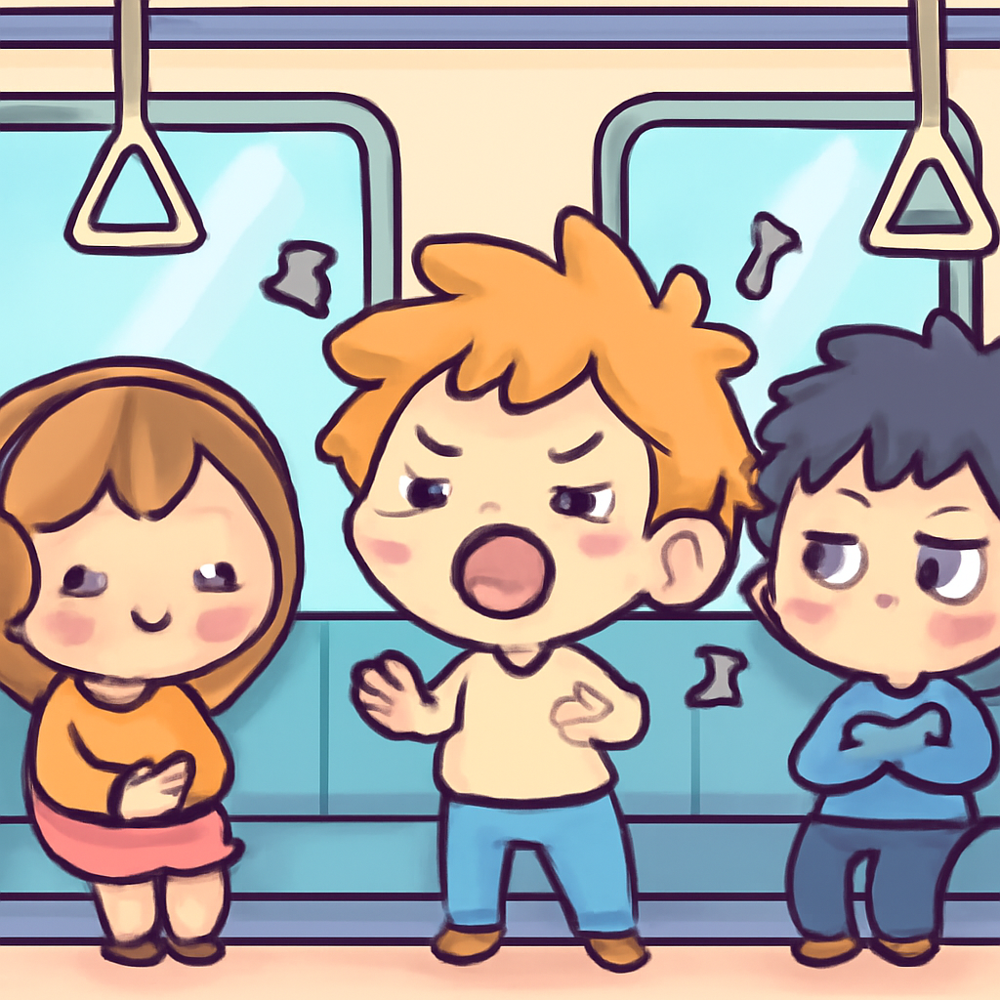

其一 · 烏克蘭基輔 · 俄烏和平談判重啟
俄羅斯願意重啟和平談判，但基輔遭到導彈襲擊。
在烏克蘭基輔，俄羅斯宣佈準備在原則上重啟和平談判，這對結束戰爭是個好消息。然而，基輔卻接連遭到導彈攻擊，讓人不禁思考：和平的路途真的那麼艱難嗎？
🔗 原始新聞 ↗
2026-10-22 · 以古觀今，以笑抗愁
俄羅斯願意重啟和平談判，但基輔遭到導彈襲擊。
在烏克蘭基輔，俄羅斯宣佈準備在原則上重啟和平談判，這對結束戰爭是個好消息。然而，基輔卻接連遭到導彈攻擊，讓人不禁思考：和平的路途真的那麼艱難嗎？
🔗 原始新聞 ↗
馬克宏指責外國領袖利用法國騷亂。
法國總統馬克宏在卡塔爾發表演說，批評某些外國領袖利用法國的社會動盪來達成自己的政治目的，特別是針對即將選舉的內塔尼亞胡和特朗普。看來政治如同一場不分國界的博弈啊！
🔗 原始新聞 ↗
澳洲一名深受愛戴的議員被攻擊，社區感到心碎。
在澳洲，一名受人愛戴的議員遭到攻擊，最終不得不截肢。當地居民認為她是一位真正為社區打拼的好人，這起事件讓整個城鎮都感到心痛。政治的風險有時真的是讓人感到無奈。
🔗 原始新聞 ↗
墨西哥前檢察官因美國毒品突襲被控叛國。
墨西哥一名前檢察官因被控允許美國特工參與突襲毒品實驗室而面臨叛國指控。這使得墨西哥的法律和政治環境更加複雜，真是讓人感到這場鬥爭好比一場永無止境的戰爭。
🔗 原始新聞 ↗
英國地鐵推動禁止無耳機音樂，乘客反應不一。

英國地鐵宣布將對無耳機聆聽音樂的乘客展開行動，這一政策引發了不少乘客的討論。看來，這場運輸中的音樂革命即將上演，但音量多大才算「合適」呢？
🔗 原始新聞 ↗